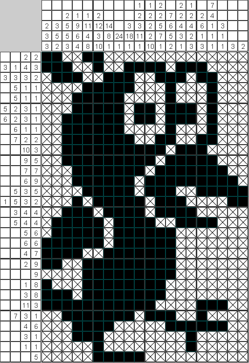

Сканворд – один из самых популярных видов кроссворда. Определения слов даются в квадратиках прямо внутри сетки, а слова-ответы вписывают по направлениям, указанным стрелками. В сетке идеального сканворда не должно быть пустых клеток.
Американский - рядом с сеткой кроссворда находятся слова, которые нужно вписать в сетку, иногда дается подсказка — в сетку уже вписаны некоторые слова или буквы.
Японский кроссворд – в этом виде головоломки нужно, базируясь на кодовых числах-подсказках, разгадать зашифрованную картинку. По большому счету эта головоломка не является кроссвордом как таковым, однако словосочетание "японский кроссворд" прижилось.
Венгерский кроссворд представляет собой поле из клеток, в которые уже вписаны буквы ответов. В цепочке клеток, составляющих каждый ответ, соседние клетки должны соприкасаться сторонами. Слова-ответы не пересекаются и не имеют общих клеток с другими словами. Эта головоломка значительно проще классического кроссворда.
Чайнворд - вид кроссвордов, в которых, как следует из названия, пересечение слов представляет собой линию. Цепочка слов строится методом стыкования, где последняя часть предыдущего слова является первой частью следующего. Если два соседних слова имеют общей лишь одну букву, то такую сетку, как правило, оформляют по принципу кроссвордной, внося в клетку с первой буквой очередного слова номер соответствующего данному слову вопроса.
Эстонский кроссворд очень похож на классический, но его сетка не содержит пустых ячеек. Ячейки, не принадлежащие одному ответу, разграничиваются толстой линией.